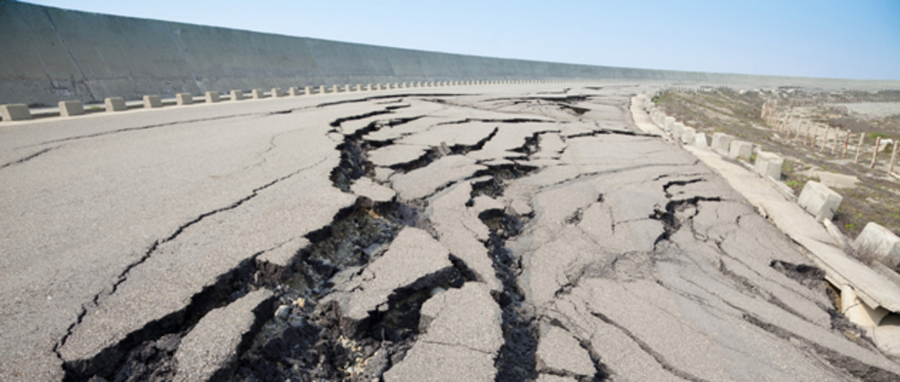

Aardbevingen
Wat zijn aardbevingen?
Een aardbeving is een trilling of schokkende beweging van de aardkorst.
Aardbevingen vinden plaats als er in de aardkorst plotseling veel energie vrijkomt. De energie plant zich dan in een golfbeweging vanuit
het centrum naar de omgeving voort. Het denkbeeldige punt waar de beving ontstaat, het zwaartepunt van de energiedichtheid, heet het hypocentrum. Het punt aan het aardoppervlak daar loodrecht boven wordt het epicentrum genoemd. Een lijn van
gelijke bevingsintensiteit rond een epicentrum heet een isoseist. Seismologie is de wetenschap van aardbevingen. Tijdens een aardbeving treden tribo-elektrische effecten op in de vorm van lichtflitsen. De meeste aardbevingen komen voor in de
aardkorst tot op een diepte van ongeveer 30 kilometer. Er komen echter ook bevingen voor op dieptes tot ongeveer 700 kilometer. De meeste aardbevingen komen voor rondom de Grote Oceaan, in het Middellandse Zeegebied, in de Himalaya en
Indonesië. Ook midden in oceanen komen bevingen voor. Aardbevingen die ontstaan onder de zeespiegel worden, minder correct, ook wel zeebevingen genoemd; een vloedgolf of tsunami kan dan het gevolg zijn. Een aardbeving onder het zeeoppervlak
hoeft echter niet altijd een tsunami te veroorzaken. Dit gebeurt alleen als grote delen grond omhoog komen bij de subductiezone waardoor een abnormale hoeveelheid water verplaatst wordt richting het land. Het water zal zich dan in een kring
verspreiden net of men een steen in het water gooit. Die rimpels lijken op de tsunamigolven, echter zijn die veel kleiner. Een gewone golf verschilt van een tsunami, een tsunami zal water over land blijven uitspuiten, een gewone golf trekt zich
na de golfslag gewoon weer terug, een tsunami kan over hoge zeewallen heen komen.
Zware aardbevingen en tsunami's veroorzaken vaak veel slachtoffers en grote schade. De zwaarste aardbeving ooit gemeten was de aardbeving van Valdivia in
Chili in 1960 (9,5 Mw). De zwaarste aardbeving in Europa was voor zover bekend de aardbeving in Lissabon van 1755 (8,5-9,0 Mw).
Oorzaken
Veel aardbevingen hangen samen met de langzame bewegingen van de aardkorst. Op grote schaal kan het de aardschollen betreffen, die langzaam ten opzichte van elkaar bewegen (platentektoniek). Op kleinere schaal vindt er ook binnen
de platen deformatie plaats.
Door deze relatieve beweging wordt spanning opgebouwd in de korst. Als de spanning hoog genoeg is kan er een schoksgewijze beweging van het materiaal aan weerszijden van een breuk in de korst optreden: de aardbeving. Hierbij wordt (een deel
van) de opgebouwde spanning ontladen.
Naschokken zijn kleinere bevingen die binnen enkele uren na de eerste beving voelbaar zijn. Deze zijn vaak het gevolg van spanningsontlading op andere, nabijgelegen delen van dezelfde breuk of op andere nabije breuken. Naschokken gebeuren in de
dagen na de aardbeving. Wanneer het 7 dagen rustig is geweest noemt men het niet meer een naschok maar een nieuwe aardbeving.
Aardbevingen op dieptes van enkele honderden kilometers worden vaak toegeschreven aan andere mechanismen. Ten eerste kunnen deze worden veroorzaakt in een subducerende plaat door de overgang van mineralen van een fase naar de andere (zie
convectie in de aarde). Wanneer de oude fase metastabiel was, kan de overgang naar de nieuwe fase zeer plotseling zijn. Op een vergelijkbare wijze kan het plotseling loslaten van water uit waterhoudende mineralen in de subducerende plaat een
aardbeving veroorzaken.
Kleine aardbevingen zijn het gevolg van vulkanische activiteit (vulkanische aardbevingen) of ontstaan door instorting van holtes in kalksteenformaties of mijn(en) (instortingsbeving(en)).
Menselijk ingrijpen kan bevingen veroorzaken. De bodemdaling door de winning van aardgas brengt aardschokken teweeg. Dit fenomeen doet zich onder meer voor in de provincie Groningen bij het dorp Loppersum.
Mogelijke andere oorzaken zijn ondergrondse kernproeven en meteorietinslagen.
Meten
De omvang van aardbevingen kan worden aangegeven met de magnitude of met intensiteit. De magnitude geeft aan hoeveel energie er bij de aardbeving vrij kwam. Dat geeft aanwijzingen over de processen die zich in de aardbodem afspelen. De
magnitude is onafhankelijk van de plaats op aarde waar deze wordt berekend. De magnitude van kleinere aardbevingen wordt gemeten op de schaal van Richter, dit is een logaritmische schaal van de hoeveelheid energie die bij de schok vrijkomt.
Proefondervindelijk heeft men berekend dat iedere toename met één magnitude-eenheid overeenkomt met een 30-voudige verhoging van de vrijgekomen energie in de vorm van seismische trillingen optreedt. De hoeveelheid energie die vrijkomt bij een
beving van magnitude 7 is dus 900 maal (30 x 30) zo groot als die welke vrijkomt bij een beving van magnitude 5. Een aardbeving met een magnitude van 3 op deze schaal is vrijwel altijd voelbaar. Vanaf magnitude 5 is sprake van een sterke
aardbeving, die vrijwel altijd matige tot aanzienlijke schade aanricht. Een aardbeving met een magnitude van 7 of nog hoger is een zware tot zeer zware aardbeving, die over het algemeen een grootschalige ramp veroorzaakt. Dergelijke zware
aardbevingen worden gemeten met de momentmagnitudeschaal Mw. In de media worden dergelijke aardbevingen soms ten onrechte aangeduid 'op de schaal van richter'.
De intensiteit van de aardbeving geeft wat de uitwerking op het aardoppervlak is. Het geeft aanwijzingen over de gevolgen die de aardbeving heeft op het aardoppervlak. De intensiteit van een beving is afhankelijk van de plaats van waarneming.
Een aardbeving op grote diepte geeft een minder grote intensiteit aan het aardoppervlak dan een minder grote diepte. De intensiteit is ook afhankelijk van de grondsoort, onderlagen, type verplaatsing en de afstand tot het epicentrum. Een
voorbeeld van een schaal voor de intensiteit is de schaal van Mercalli. En verdere ontwikkeling van deze schaal leidde tot de Europese macroseismische schaal.
Maan
Door seismometers zijn ook "maanbevingen" geregistreerd als gevolg van inslagen en maangetijden.